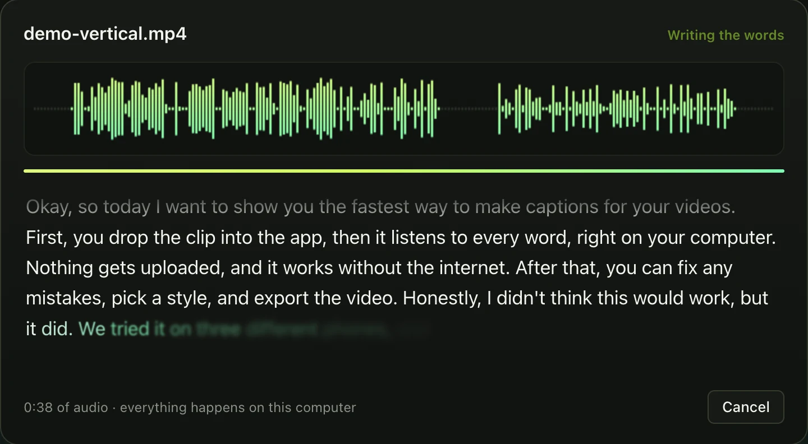
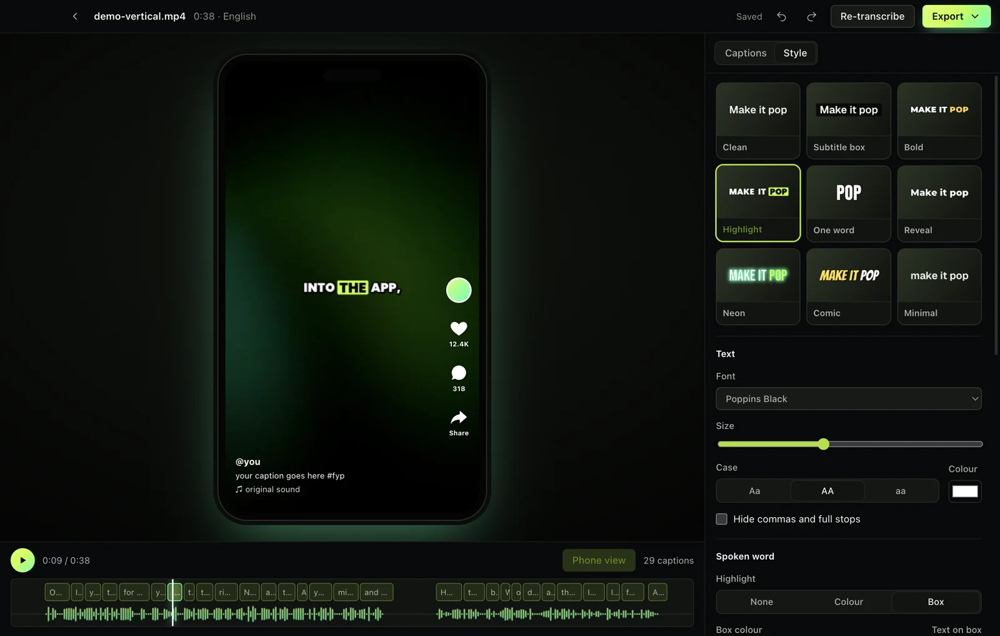
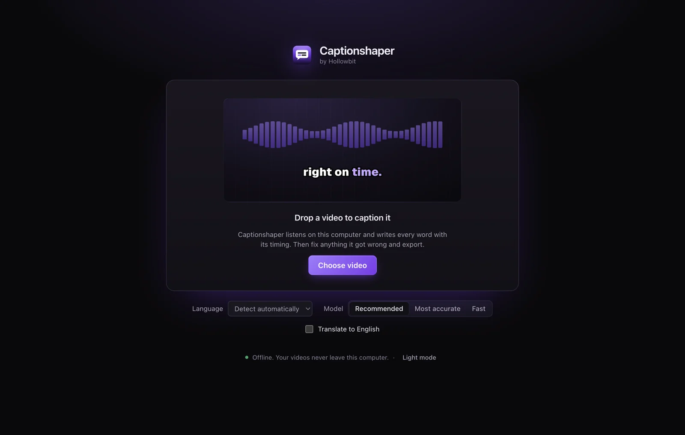

Captionshaper 能做的一切
从听到的第一个词到完成的视频，全部在你的电脑上完成。
认真地听
语音识别使用 OpenAI 的 Whisper 模型在你的 Mac 或 PC 上运行，能听懂口音、快速说话和约 99 种语言。
- 先找到说话的部分语音检测会跳过片头、音乐和静音，不会凭空写出文字。
- 精确到每个词每个词都在声音开始时出现，字幕同步，高亮恰好落在节奏上。
- 自动识别语言也可以自己选择。还能把任何支持的语言转成英文字幕。
- 三种模型推荐模型适合大多数视频，最准确模型适合难度高的语言和音频，快速模型适合草稿。

好读的字幕
文字稿不等于字幕。Captionshaper 会决定每条字幕的起止时间以及每行在哪里断开。
- 自然断行在句子和短语结尾断行，不在虚词后断开。
- 不跨越停顿说话停下，字幕就结束。每行都放得下视频宽度。
- 改起来很快不确定的词有下划线。直接编辑、查找替换、拆分、合并、撤销。
- 自动保存关掉应用，之后再打开同一个视频，修改仍然都在。

为社交视频设计的样式
九种起步样式和十一种字体。预览就是导出的效果。
- 高亮正在说的词改变颜色或加上底框，就像大博主那样。
- 逐词动画弹出、淡入或滑入。还可以隐藏或调暗尚未说出的词。
- 描边、阴影和发光各自可设颜色，还能在每行后面加底框。
- 手机预览看到 TikTok、Reels 和 Shorts 的按钮位置，让字幕不被遮住。

各种导出方式
把字幕带到任何需要的地方。
- 带字幕的视频烧录字幕的 MP4，直接发布。
- 字幕文件SRT 用于 YouTube 和剪辑软件，VTT 用于网页，ASS 保留完整样式。
- 文字稿纯文本，按长停顿分段。
- 天生私密不上传任何内容。下载一次模型后即可离线使用。
